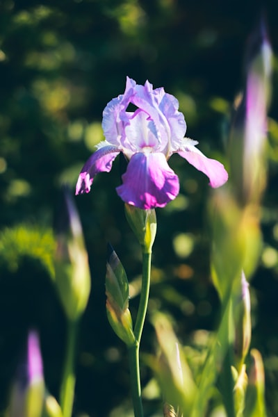
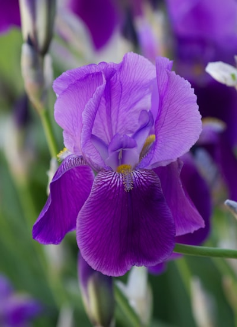

Un bloque por especie, con 6 flores reales del dataset Iris cada uno.
Toca "Usar" para probar esa fila en el clasificador.
Setosa
| Sépalo L |
Sépalo A |
Pétalo L |
Pétalo A |
|
| 4.3 | 3.0 | 1.1 | 0.1 | Usar |
| 5.7 | 4.4 | 1.5 | 0.4 | Usar |
| 4.6 | 3.6 | 1.0 | 0.2 | Usar |
| 4.4 | 3.2 | 1.3 | 0.2 | Usar |
| 4.8 | 3.1 | 1.6 | 0.2 | Usar |
| 5.2 | 3.5 | 1.5 | 0.2 | Usar |

Versicolor
| Sépalo L |
Sépalo A |
Pétalo L |
Pétalo A |
|
| 6.3 | 2.5 | 4.9 | 1.5 | Usar |
| 5.5 | 2.6 | 4.4 | 1.2 | Usar |
| 6.3 | 3.3 | 4.7 | 1.6 | Usar |
| 5.6 | 3.0 | 4.5 | 1.5 | Usar |
| 5.8 | 2.6 | 4.0 | 1.2 | Usar |
| 5.7 | 2.9 | 4.2 | 1.3 | Usar |

Virginica
| Sépalo L |
Sépalo A |
Pétalo L |
Pétalo A |
|
| 6.5 | 3.0 | 5.2 | 2.0 | Usar |
| 7.2 | 3.2 | 6.0 | 1.8 | Usar |
| 7.7 | 2.6 | 6.9 | 2.3 | Usar |
| 6.3 | 2.8 | 5.1 | 1.5 | Usar |
| 6.7 | 3.3 | 5.7 | 2.1 | Usar |
| 6.0 | 2.2 | 5.0 | 1.5 | Usar |
← Volver al clasificador